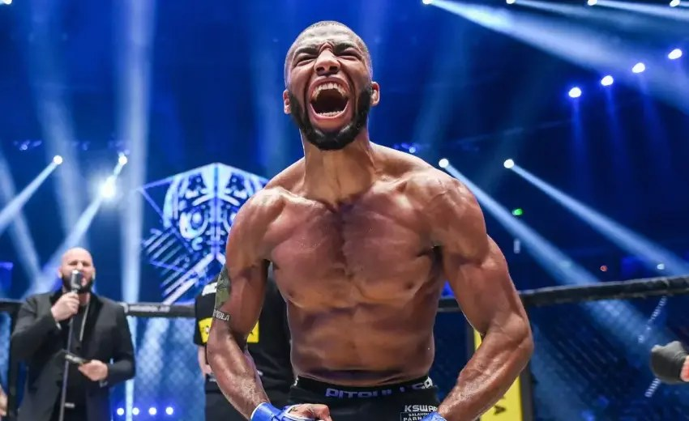

Accueil · UFC Paris 2026 · Portrait
Parnasse à l’UFC, le test Hooker

Salahdine Parnasse entre dans l’octogone UFC le 5 septembre à Paris, en tête d’affiche, contre Dan Hooker. Rare, pour un premier. Le combat dira si la KSW préparait à ça.
D’où il vient
Français, exposé surtout en KSW. On l’appelait Super Prodige. Debout, au changement de niveau, au sol. Titres plumes puis légers en Pologne.
Le palmarès public tourne autour de 23-2 — Sherdog, Tapology, ça diverge un peu selon les amateurs. Début 2026, un TKO contre Marcin Held, encore en KSW.
Le parcours KSW
La KSW a servi de vitrine continentale à Parnasse. Titres multiples, défenses, affrontements contre des profils polonais et internationaux : le CV est dense pour un combattant encore jeune. Ce n’est pas un spécialiste one-dimensional ; les revues de combats insistent sur sa capacité à imposer le rythme, que ce soit debout ou au sol.
Au 31 août 2026, les compilations publiques le listent encore champion KSW des légers et des plumes. Un départ UFC se traduit souvent par une vacation : on mettra à jour la page champions dès que KSW officialisera le statut.
Passer à l’UFC n’est pas anodin : la profondeur des divisions, la taille de l’octogone (plus large qu’en KSW), l’intensité cardio et l’expérience des adversaires changent l’équation. Parnasse le sait ; l’organisation le teste immédiatement avec Hooker, loin d’un matchmaking « protecteur ».
Style et forces repérées
- Lutte et contrôle : capacité à changer de plan et sécuriser des rounds au sol.
- Finition : plusieurs victoires par soumission ou arrêt — menace constante si le combat touche le tapis.
- Gestion de distance : jeu de jab et de déplacements avant la pression.
- Maturité tactique : peu de panique visible dans les reprises KSW contre des veterans locaux.
Les limites restent à prouver à ce niveau : chin non éprouvé sur la durée UFC, adaptation à un vétéran long et habile en clinch (Hooker), gestion des 25 minutes si le rythme chute.
Pourquoi Hooker pour des débuts ?
Dan Hooker (Nouvelle-Zélande) est un nom établi : volume de coups, knees en clinch, guerres mémorables, expérience contre des tops de division. L’UFC offre souvent ce type de « baromètre » aux signatures européennes — ni un sac de frappe, ni un champion, mais un test révélateur.
Pour Parnasse, headliner à Paris, c’est aussi une opportunité médiatique : le public connaîtra vite le nom s’il performe. Pour Hooker, une victoire relance une trajectoire ; une défaite alimenterait le récit « prospect KSW validé ».
Lecture stylistique : analyse Hooker vs Parnasse.
Enjeux pour le MMA français
Après Gane, Imavov, Saint-Denis et la génération BSD, Parnasse représente un autre flux : champion d’organisation européenne qui signe direct en headliner. Si d’autres KSW ou ARES suivent, Paris 2026 pourrait marquer un tournant de recrutement.
Contexte dossier : combattants français · présentation · carte.
Rien n’est joué avant samedi. Ça, c’est le parcours. Le reste se verra dans la cage.